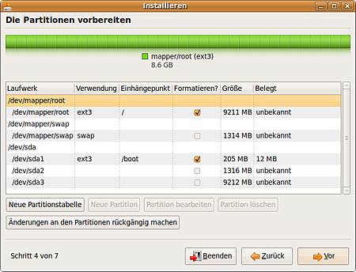

Schlüsselableitung
Dieser Artikel wurde für die folgenden Ubuntu-Versionen getestet:
Ubuntu 16.04 Xenial Xerus
Ubuntu 14.04 Trusty Tahr
Zum Verständnis dieses Artikels sind folgende Seiten hilfreich:
Das Ubuntu-System lässt sich ab Ubuntu 12.10 bereits automatisch bei der Installation verschlüsseln. Mit dieser Anleitung wird Ubuntu stattdessen manuell, ebenso bis auf die Boot-Partition, die nur den Kernel und Bootloader enthält, in verschlüsselten Partitionen installiert, wodurch man mehr Einfluss auf die Partitionierung hat. Es wird die LUKS-Schlüsselableitung eingesetzt, da mit dieser beim Start nur eine Passworteingabe nötig ist und der Ruhezustand (S4) noch funktioniert.
Sollte mehr als eine Partition für Ubuntu verwendet werden (z.B. eine separate Home-Partition), ein zusätzliches Betriebssystem auf der Festplatte bereits installiert sein oder nachträglich installiert werden, ist die Variante auf Basis von LVM, die unter System verschlüsseln ausführlich beschrieben wird, vorzuziehen. Mit dieser ist es auch im Gegenteil zu der hier beschriebenen möglich, nachträglich die internen Partitionsgröße zu verändern oder weitere hinzuzufügen oder zu löschen.
Das hier erörterte Verfahren ist weniger flexibel, funktioniert aber ohne LVM.
Hinweis:
Ohne ein sicheres Kennwort nutzt die stärkste Verschlüsselung nicht! Wie man Passwörter am besten wählt, steht hier: Sicherheits 1x1
Vorbereitungen¶
Wenn sich auf dem Computer schon ein Betriebssystem (wie beispielsweise Windows, Mac OS oder ein anderes Linux-System) oder wichtige Daten befinden, sollte von den wichtigen Daten unbedingt eine Sicherung erstellt werden. Wie bei jeder Veränderung am Computer kann immer auch etwas schiefgehen.
Zur Installation wird die normale Desktop-CD benötigt. Diese einfach booten [1]. Nachdem das Live-System geladen wurde, jedoch nicht das Installationsprogramm ausführen. Es wird zwingend eine funktionierende Internetverbindung [2] benötigt, da Programme nachinstalliert werden müssen.
Hinweis:
Alle folgenden Befehle benötigen Root-Rechte. Man sollte also mit sudo -s Root-Status erlangen!
Partitionierung¶
Achtung!
Änderungen an Partitionen können nicht mehr rückgängig gemacht werden!
Hinweis:
/dev/sdX1, /dev/sdX2 bzw. /dev/sdX3 müssen im folgenden immer durch die tatsächlichen Bezeichnung der Partitionen ersetzt werden!
Außerdem ist zu beachten, dass ohne eine erweiterte Partition nicht mehr als eine zusätzliche neben den dreien von Ubuntu vorhanden sein können.
Es werden mindestens drei Partitionen benötigt [5]:
/dev/sdX1 (ext4)
Boot-Partition (unverschlüsselt)
Größe: mindestens 200 MB (mehr ist im Regelfall aber nicht nötig)
/dev/sdX2 (unformatiert)
verschlüsselte Swap-Partition
Größe: ca. 1,3fache des RAMs (bei weniger als 512 MB Arbeitsspeicher das 2fache)
/dev/sdX3 (unformatiert)
verschlüsselte Root-Partition
Größe: üblicherweise der verfügbare Rest, aber mindestens 8 GB
Hinweis:
Tipp: Die Boot-Partition (unverschlüsselt) wird so groß erstellt (z.B. 5 GB), dass ein ISO-Image der gewünschten Ubuntu Distribution (gleiche Architektur!) großzügig drauf Platz findet. Dann wird wie hier beschrieben das ISO-Image in grub2 eingebunden. Falls man nun irgendwann Probleme mit dem Vollverschlüsselten System hat, kann man beim Booten in grub2 stattdessen das ISO Live System starten und damit Diagnose und Reparaturen des Vollverschlüsselten System ausführen.
Experten-Info:
Man sollte sich vorab darüber informieren, ob der Rechner mit einem EFI Bootmanagement versehen ist und wie die Festplatte(n) formatiert wurden! Weitere Informationen stehen unter EFI Grundlagen zur Verfügung!
Bei EFI-Systemen ist zu beachten, dass auf jeden Fall neben der unverschlüsselten Boot-Partition noch eine unverschlüsselte EFI-Partition anzulegen ist. Eine Alternative wäre die Nutzung des BIOS-Kompatibilitätsmodus CSM. Zum weiteren Vorgehen bei vorhandenem EFI Bootmanagement für verschlüsselte Systeme mit Schlüsselableitung kann man sich auch an den EFI-Hinweisen der Anleitung System verschlüsseln ohne Schlüsselableitung orientieren. Insbesondere ist darauf zu achten, dass die EFI-Partition als solche gekennzeichnet sowie dass sie beim chroot berücksichtigt wird.
Verschlüsselung der Partitionen¶
Achtung!
Es ist aus Sicherheitsgründen empfehlenswert, die Partitionen einmal mit Zufallszahlen zu überschreiben, vor allen Dingen, wenn vorher auf diesen unverschlüsselte Daten gespeichert waren. [6] Ansonsten sind unter Umständen viele Dateien nach dem Verschlüsseln noch auslesbar.
Daraufhin wird die root Partitionen verschlüsselt und mit den Namen root geöffnet [7].
Experten-Info:
Sollte eine niedrigere Schlüssellänge oder ein anderer Verschlüsselungsalgorithmus bevorzugt werden, müssten die Befehle entsprechend angepasst werden[7].
cryptsetup luksFormat -c aes-xts-plain64 -s 512 -h sha512 -y /dev/sdX3 cryptsetup luksOpen /dev/sdX3 root
Anschließend wird die Swap-Partition mit einem von der Root-Partition abgeleiteten Schlüssel [8] erstellt und geöffnet:
/lib/cryptsetup/scripts/decrypt_derived root | cryptsetup luksFormat -c aes-xts-plain64 -s 512 -h sha512 -y /dev/sdX2 /lib/cryptsetup/scripts/decrypt_derived root | cryptsetup luksOpen /dev/sdX2 swap
Formatierung der Partitionen¶
Aufgrund von Problemen mit dem Live-CD-Installer müssen die verschlüsselten Partitionen vorher manuell formatiert werden:
mkfs.ext4 /dev/mapper/root mkswap /dev/mapper/swap
Installation¶

Danach wird das Installationsprogramm gestartet [1] und mit diesem bis Schritt 4 fortgefahren, bei dem die "manuelle Partitionierung" ausgewählt wird.
Im nächsten Installationspunkt werden die folgenden Partitionen jeweils mit einem Doppelklick auf die entsprechenden Einträge konfiguriert. Die Swap-Partition braucht nicht ausgewählt zu werden, da sie automatisch erkannt wird.
/dev/sdX1
Boot-Partition
Dateisystem: ext4
Formatieren: ja
Einhängepunkt: /boot
/dev/mapper/root
Root-Partition
Dateisystem: ext4 oder gewünschtes Linux-Dateisystem
Formatieren: ja
Einhängepunkt: /
Danach wird gemäß Anleitung [1] mit der Installation fortgefahren, jedoch nach dem Abschluss der Installation nicht neugestartet.
Experten-Info:
Sollte parallel Windows installiert und mit Truecrypt verschlüsselt worden sein, wird GRUB in die Boot-Partition /dev/sdX1 anstelle des MBRs installiert. Das wird im Installations-Punkt 7 unter Erweitert eingestellt. Dort wird anstelle von hd0 die Boot-Partition ausgewählt. GRUB erscheint dann, sobald die Taste Escape im Truecrypt-Bootloader gedrückt wird.
Ins verschlüsselte System wechseln¶
Hinweis:
Alle folgenden Befehle müssen in ein und demselben Terminal [4] ausgeführt werden.
Um die nötigen Anpassungen vorzunehmen, wird mittels chroot in das eigentliche, verschlüsselte System gewechselt. Das geschieht durch die Eingabe der folgenden Befehle:
mount /dev/mapper/root /mnt mount /dev/sdX1 /mnt/boot mount -o rbind /dev /mnt/dev mount -t proc proc /mnt/proc mount -t sysfs sys /mnt/sys cp /etc/resolv.conf /mnt/etc/resolv.conf chroot /mnt /bin/bash
Software installieren¶
Die benötigten Pakete werden mit diesem Befehl [4] installiert:
apt-get install cryptsetup
/etc/crypttab editieren¶
Zuerst muss die UUID der Root- und Swap-Partition ermittelt werden. Das geschieht mit folgenden Befehlen:
blkid /dev/sdX3 blkid /dev/sdX2
Daraufhin wird mit dieser Eingabe die nötige Zeile in /etc/crypttab eingefügt, wobei <..._VOLUME_ID> vorher durch die ermittelte UUID (ohne Anführungszeichen!) ersetzt werden muss (jeweils ohne die spitzen Klammern):
echo "root UUID=<SDX3_ROOT_VOLUME_ID> none luks" >> /etc/crypttab echo "swap UUID=<SDX2_SWAP_VOLUME_ID> root luks,keyscript=/lib/cryptsetup/scripts/decrypt_derived" >> /etc/crypttab
Anschließend kann man prüfen[9], ob auch wirklich alles korrekt eingetragen wurde und gegebenenfalls nachbessern. Ein Beispiel mit nicht repräsentativen UUIDs:
1 2 3 | # <target name> <source device> <key file> <options> root UUID=c9e6aab5-e3a0-43e9-a594-4bcf1b61e7c1 none luks swap UUID=d09e29f2-9882-457d-b4f0-42f12aebdd3b root luks,keyscript=/lib/cryptsetup/scripts/decrypt_derived |
Ab Ubuntu 15.04¶
Zusätzlich zu obigen Schritten sind aufgrund systemd folgende Schritte nötig, da die Schlüsselableitung sonst nicht mehr funktioniert (vgl. dazu systemd-Mailingliste  , Debian Bug-Tracker und hier im Forum).
, Debian Bug-Tracker und hier im Forum).
Falls es sich um eine Swap-Partition handelt, wendet man die zusätzlichen Änderungen unter Workaround ab Ubuntu 15.04 mit systemd an, für alle anderen Partitionen benutzt man die nun folgende Anleitung.
Entsprechend ZFS on LUKS Installation im Abschnitt "Create /etc/initramfs-tools/conf.d/cryptroot Entries" legt man zunächst eine Kopie des Skriptes der Schlüsselableitung im Initramfs an:
mkdir /etc/initramfs-tools/scripts/luks cp /lib/cryptsetup/scripts/decrypt_derived /etc/initramfs-tools/scripts/luks/get.root_crypt.decrypt_derived
Anschließend wird in dieser Kopie anstatt der Variable $1 jeweils nochmal der zur <SDX3_ROOT_VOLUME_ID> gehörende <target name> eingetragen - im folgenden Beispiel wieder root:
sed -i s/\$1/root/g /etc/initramfs-tools/scripts/luks/get.root_crypt.decrypt_derived
Der Befehl ist also unverändert zu übernehmen, lediglich das obige target namens root ist hier einzusetzen oder ggf. an den eigenen Namen anzupassen.
Zuletzt ist noch die Datei cryptroot anzulegen. Dazu führt man folgende Befehle, welche anzupassen sind, aus:
echo "target=root,source=UUID=<SDX3_ROOT_VOLUME_ID>,key=none" >> /etc/initramfs-tools/conf.d/cryptroot echo "target=data,source=UUID=<DATA_VOLUME_ID>,keyscript=/scripts/luks/get.root_crypt.decrypt_derived" >> /etc/initramfs-tools/conf.d/cryptroot
In der ersten Zeile wird im Beispiel wieder wie oben das Beispiel root für <target name> eingetragen sowie die UUID <SDX3_ROOT_VOLUME_ID> entsprechend ihrem tatsächlichen Wert eingesetzt. Im zweiten Befehl wird die Partition, welche durch die Schlüsselableitung geöffnet werden soll, eingetragen - in diesem Beispiel unter dem Namen data, wenn also entsprechend die Partition unter dem Namen data (auch nochmal nachzusehen im Verzeichnis /dev/mapper) entschlüsselt wurde. Hier ist ebenfalls mittels blkid dessen <DATA_VOLUME_ID> entsprechend einzusetzen.
Alternativ kann man auch die, zumindest im Wesentlichen, fertig formulierte und getestete Anleitung aus der Diskussion zum Wikiartikel verwenden. Allerdings ist diese auch nicht weniger aufwendig, nicht robuster und es kann für manche Benutzer der Schlüsselableitung nachteilig sein, weil man dabei für jede Partition nur dasselbe Passwort verwenden kann anstatt tatsächlich einen neuen Schlüssel abzuleiten.
Abschließend wird mit den nun folgenden Abschnitten dieser Anleitung fortgefahren.
Kernel-Initramfs aktualisieren¶
Um die Änderungen an der crypttab zu übernehmen, muss noch
update-initramfs -u -k all
ausgeführt werden.
Beenden/Neustart¶
Mit den beiden folgenden Befehlen wird die Chroot-Umgebung geschlossen und das System neugestartet. Beim Bootvorgang sollte dann nach dem Passwort gefragt werden.
exit sync reboot
Sollte einem dabei ein Fehler unterlaufen sein, kann man den Chroot jederzeit genauso oder - minimal abweichend - mittels chroot/Live-CD durchführen. Der Hinweis dort zum Initramfs ist bei beiden Variationen bei jeder Wiederholung zu beachten.
Problembehebung¶
Workaround ab Ubuntu 15.04 mit systemd¶
Ohne suspend-to-disk Support kann die Swap-Partition mit Einwegschlüsseln verwendet werden. Diese Methode kommt ohne das Script decrypt_derived aus und funktioniert daher auch mit systemd ab Ubuntu 15.04 - ohne obige Zusatzschritte ab Ubuntu 15.04.
Es wird eine freie Swap-Partition benötigt, z.B. unter /dev/sda2.
Die Kennung der Partition (PARTUUID) wird mit blkid ermittelt, auch eindeutige Bezeichner unter /dev/disk/by-id und /dev/disk/by-path können verwendet werden.
/dev/sda3 ist als Bezeichner nicht verwendbar!
die UUID ist ebenfalls nicht verwendbar (ändert sich bei jeden Neustart)
Achtung!
Die Verwendung von einem nicht 100% eindeutigen Bezeichner z.B. von /dev/sda2 führt mit hoher Wahrscheinlichkeit irgendwann zu einem kompletten Datenverlust, wenn z.B. beim Starten mal ein anderer Datenspeicher als sda benannt wird!
Eintrag der in der /etc/crypttab für die Swap Partition:
swap PARTUUID="xxxxx-xxx-xxx-xxxx" /dev/urandom swap,cipher=aes-cbc-essiv:sha256,size=256
/dev/urandom ist dabei der Einmalschlüssel.
Update der initramfs
sudo update-initramfs -u -k all
Der Eintrag in der fstab:
/dev/mapper/swap none swap sw 0 0
Nach dem Neustart kann mit
ls -la /dev/mapper/ sudo cryptsetup status /dev/mapper/swap
gepüft werden, ob der das verschlüsselte Swap-Gerät verfügbar ist, und mit
swapon -s top
ob es verwendet wird.
Quelle: https://wiki.archlinux.org/index.php/Dm-crypt/Swap_encryption
- Erstellt mit Inyoka
-
 2004 – 2017 ubuntuusers.de • Einige Rechte vorbehalten
2004 – 2017 ubuntuusers.de • Einige Rechte vorbehalten
Lizenz • Kontakt • Datenschutz • Impressum • Serverstatus -
Serverhousing gespendet von